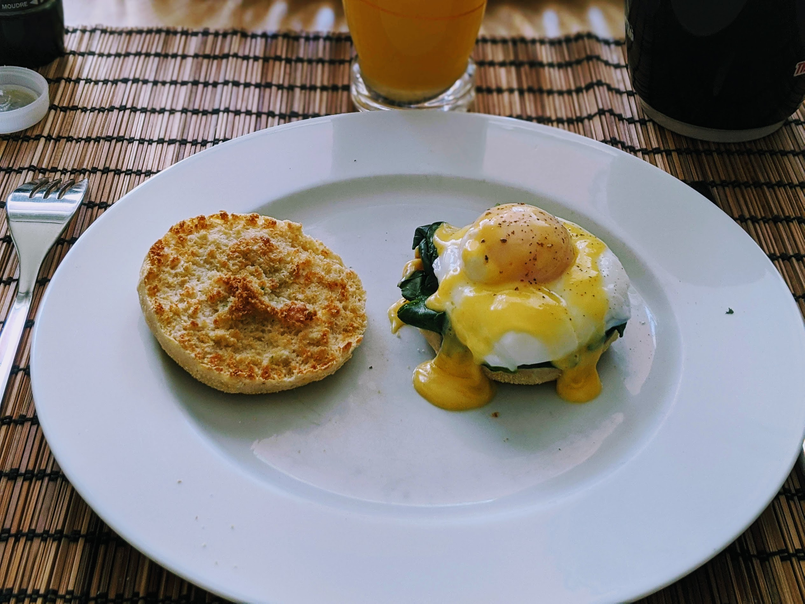

Œufs Florentine

Pour 2 personnes :
- Deux English muffins
- Quatre œufs
- Le jaune d'un gros œuf
- 30mL d'eau froide
- 15mL de jus de citron (frais)
- 50g de beurre froid
- Une pincée de piment de Cayenne
- 200g d'épinards
- Sel, poivre
- Couper le beurre en cubes, le laisser au frigo jusqu'à la dernière minute.
- Laver et équeuter les épinards.
- Battre le jaune d'œuf avec l'eau, le jus de citron, le piment et sel dans un bol en métal.
- Poser le bol sur une casserole dans lequel un fond d'eau bouillante frémit. Idéalement, il faut que le bol ne touche même pas l'eau, mais qu'il chauffe uniquement grâce à la vapeur ; sinon, un bain-marie traditionnel fonctionne aussi.
- Ajouter les cubes de beurre, et battre en continu. Le beurre devrait fondre, puis la sauce devrait commencer à mousser un peu, et prendre au bout d'une bonne dizaine de minutes environ. Mieux vaut utiliser un batteur électrique.
- Pendant ce temps, faire cuire les épinards à la vapeur dans une cocotte-minute, 5 minutes à partir du sifflement.
- Pendant ce temps, faire chauffer pas mal d'eau dans une grande casserole.
- Pendant ce temps, couper les muffins en deux et les faire toaster sous la grille du four.
- Lorsque l'eau bout, que les épinards sont cuits et que la sauce hollandaise a bien épaissi, faire pocher les œufs: éteindre le feu, ajouter un peu de vinaigre dans l'eau, puis lorsqu'il n'y a plus de bulles, disposer les œufs délicatement dans l'eau. Les récupérer avec une écumoire au bout d'une minute.
- Disposer de l'épinard sur chaque moitié de muffin, ajouter l'œuf poché, de la sauce hollandaise, saler et poivrer le tout. Déguster immédiatement, après avoir pris une photo.
Remarque : cette recette a beaucoup d'étapes parallèles, notamment la sauce hollandaise qu'on ne peut pas vraiment arrêter de battre, sinon elle se sépare. Mieux vaut être deux derrière les fourneaux. Si on est plus que deux, l'élément limitant est le pochage des œufs : 4 œufs en parallèle dans une casserole assez large est le maximum, donc il faut utiliser plusieurs casseroles.